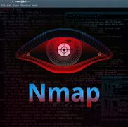
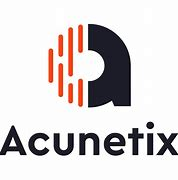

The Featured Article

Credits To the Rightful Owner of this Photo
The Most Widely Used Tool By the Hackers is Nmap
Network Mapper is a free and popular open-source hacker’s tool. It is primarily used for discovery and security auditing. It is being used by thousand’s of system administrators across the world for the purpose of network inventory, inspect open ports manage service upgrade, schedule as well as to inspect host or service uptime. There are several advantages of using Network Mapper, one among its advantages is that the admin user can monitor whether the network and associated nodes require patching.
The Second Most Used Tool By White Hat Hackers are Acunetix Web Vulnerability Scanner

Acutenix Web Vulnerability Scanner automatically crawls your website and it automatically monitors your web applications and detects dangerous SQL injection. It also determines where applications need to be secured, thus protecting your business from hackers.
The Third Most Powerful Hacking Tool is Metasploit Framework
Metasploit Project is an extremely famous hacking framework or pen-testing. It is a bunch of hacking tools that are used to execute different tasks. This tool is primarily used by Cybersecurity professionals and ethical hackers. Metasploit is a computer security project or framework which gives the user the necessary information about security vulnerabilities.
TOPICS
- Ethical Hacking
- Pentesting
- Legal Hacking
POPULAR POSTS
Metapsloit is a Powerful Tool that can Penetrate Windows and Android Phones. Metasploit is not just a single tool. It is a complete framework. It is a Ruby-based, modular penetration testing platform that enables you to write, test, and execute exploit code, it is flexible and extremely robust and has tons of tools to perform various simple and complex tasks.
Nmap is Powerful Scanning Tool that can find Available Vulnerabilities of a Wireless Device and Exploit. Nmap is short for Network Mapper. It is an open-source Linux command-line tool that is used to scan IP addresses and ports in a network and to detect installed applications.
Nmap allows network admins to find which devices are running on their network, discover open ports and services, and detect vulnerabilities.
Gordon Lyon (pseudonym Fyodor) wrote Nmap as a tool to help map an entire network easily and to find its open ports and services.
Nmap has become hugely popular, being featured in movies like The Matrix and the popular series Mr. Robot.